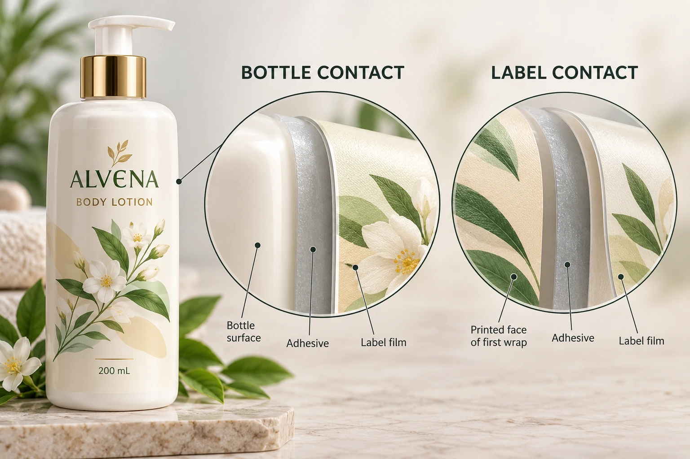

Decide whether the design really needs an overlap
First identify the intended finished arrangement: a gap, edges meeting under an agreed layout, or a deliberate overlap. A preliminary circumference calculation cannot make that decision for the brand and printer. The size guide helps establish the usable panel and physical fit.
An overlap can be part of a deliberate design. It can also appear unintentionally when a drawing, container variation or application arrangement was not reconciled. Ask which situation the project is addressing before ordering a different adhesive.
If the brand does not need an overlap, a supported gap arrangement may avoid the face-to-adhesive interface. That is an alternative to evaluate, not an instruction to shorten every label. Copy placement, visible bottle area, production capability and the applied reference all need review.
Name the two contact surfaces
Record the label adhesive and the actual bottle surface for the main applied area. Then separately record what the overlap end contacts: printed ink, laminate, varnish, exposed film or another identified surface in the supplied construction.
Do not call the second contact simply label material. The finish visible on top may be the relevant receiving surface. An appearance change can therefore reopen a seam question even when the film and bottle are unchanged.
Have the converter explain the proposed arrangement and which representative evidence is appropriate. This guide does not assert a universal adhesive-to-finish compatibility or recommend a bond recipe. The point is to make the interface visible enough that a technical party can actually evaluate it.
The adhesive sample-planning guide covers identity, preparation and observation timing. Extend that record to the identified overlap surface rather than assuming the bottle sample covers both contacts.
Make the seam sample represent the intended pack
Use the actual finished construction, not an unprinted film strip if the production overlap will land on a coating. Identify the bottle, label revision and proposed seam arrangement. Ask the supplier what preparation and observation conditions apply.
Record how the sample was placed and which edge overlaps which area. The brand can mark the intended front position and the production team can identify what the application method supports. A hand-built appearance sample should be labelled as such; it does not establish the repeatability of a filling-line operation.
Observe the agreed seam feature at the appropriate stage. If an edge changes, describe where and when without immediately declaring adhesive failure. A result can require investigation of the construction, geometry or application event. Preserve the sample and refer it to the responsible technical team.
Use a seam-specific approval record
This table separates physical fit from the new contact that an overlap introduces.
| Item | Information to identify | Decision |
|---|---|---|
| Intended arrangement | Gap, meeting edges or deliberate overlap | Is a face-contact seam actually required? |
| Main interface | Adhesive and bottle surface references | Which bottle-side evidence applies? |
| Closing interface | Actual receiving face and finish | Which additional compatibility question applies? |
| Geometry | Approved shape and marked seam location | Does the supplied layout represent the intent? |
| Sample | Finished construction, pack and preparation | Is the evidence representative? |
| Observation | Stage, conditions and exact edge feature | What is accepted or still unresolved? |
| Release owner | Brand, printer and application contact | Who confirms the remaining decision? |
Complete the first three rows before interpreting sample photographs. Then check geometry and sample identity, obtain the relevant observation and document the scope of acceptance. If the sample has no production finish, record the limitation instead of approving a finish-to-adhesive bond from it.
Stop the affected seam release if the receiving surface is unknown, the overlap was accidental or the application team cannot reproduce the proposed arrangement. A quotation can still proceed with the open condition identified; it should not silently become a final production approval.

A finish change and a size change are different requests
A hypothetical brand may keep the same bottle and switch from one protective finish to another. If its wrap overlaps, the receiving face at the seam may change. Ask whether the existing seam evidence still applies.
A second brand may keep the finish and use a different circumference. Its important question could be whether the approved overlap arrangement still occurs at all. Reusing the old label width without a fit check would leave a geometry gap, even if material compatibility were unchanged.
For custom cosmetic labels, send the bottle reference, finished label dimensions, quantity per design, current construction and an image marking the intended seam. Identify whether the closing edge contacts bottle or label face. The contact form prepares a message; send artwork and sample records separately through email or WhatsApp. Ask for the interface that has not yet been approved, rather than another general assurance that the label sticks.